出発前に確認しましょう
11月7日（土）から準備スタート
機内持ち込み手荷物
- 手荷物：56 × 36 × 23 cm以内（キャスター・持ち手を含む）。頭上の棚に収納できるサイズ。
- 身の回り品：40 × 25 × 20 cm以内。前の座席の下に収納できるサイズ。
- 空のペットボトル：持っているとお得。水は持ち込めませんが、搭乗待合エリアの給水機を利用できます。
11月9日（月）香港初日
楽しい旅行の始まりです！
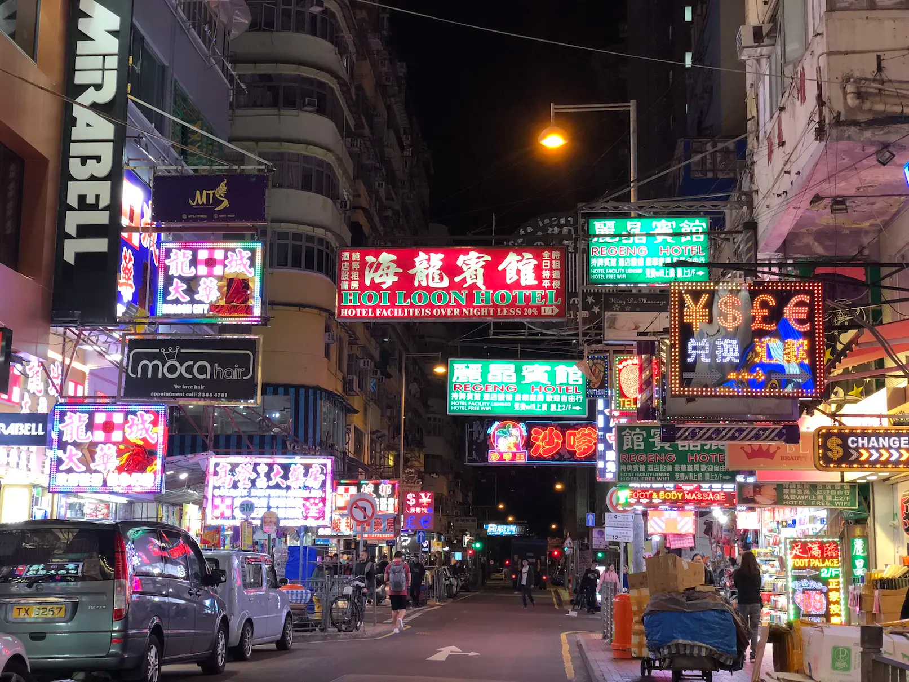
✈️ 福岡から香港空港へ
- 福岡空港で
早めに着いておきましょう。
オンラインチェックインが終わっていれば、空港ではオンラインチェックインの看板があるところに並べます。
搭乗券を受け取ったらしばらく時間があると思います。
・1階でWi-Fiを受け取ろう。
Wi-Fiは預けられないので手荷物の中に入れましょう。
・搭乗前に軽食を。
時間が心配なら、先に出国手続きをしても免税店のところにフードコートがありますよ。 - UO601便
福岡発 12:50 → 香港着 15:50（現地時間）
３時間に見えますが時差があるので実際は４時間くらいです。 - 香港空港到着
地下鉄のような電車に乗って入国審査会場まで行きます。人の流れについて行って大丈夫。
入国審査・手荷物受取後「Ｂ出口」でカズミがお迎えします。３人でホテルへ向かいましょう。
🚇 空港からホテルへ
カズミからOctopus（八達通）カードを受け取ります。香港の交通機関や買い物に使える、Suica・SUGOCAのようなカードです。
あとはカズミ任せで大丈夫！
🏨 ホテルにチェックイン
キー グリーンホテル モンコック
旺角睿景酒店
No. 23 Tai Nan Street, Mongkok, 油尖旺
旺角（モンコック）および太子（プリンスエドワード）エリアにある2024年オープンの4つ星ホテルです
🌆 夕方は尖沙咀（チムサーチョイ）へ
ホテルでひと息ついたら、無理のない範囲で尖沙咀を散策してみましょうか
地下鉄の上を南北に走るネイザンロード（彌敦道）は、香港らしい活気とネオンが楽しめる九龍の大通り。高層ビルや老舗店が並び、金色に輝く看板を眺めながら歩けば、まるで映画の世界。ショッピングやグルメ、二階建てバスからの街並み観察も楽しみの一つです。
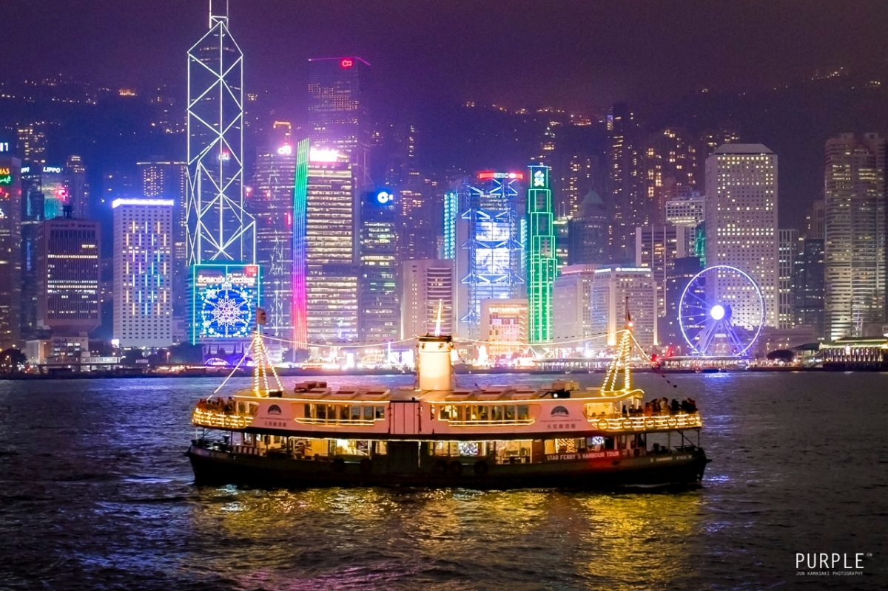
19:00 予約済み
ウーコン（滬江大飯店）で夕食。尖沙咀にあります。
上海ガニは、一般に9月下旬〜12月ごろが旬とされます。まず甲羅を外し、濃厚なカニ味噌と卵をじっくり味わいましょう。脚やハサミは殻を割って身を取り出し、細い部分も忘れずに。黒酢や生姜を添えると風味が引き立ちます。熱々のうちに、身や味噌を少しずつ楽しむのがコツです。
露店で、紐でくくられた上海ガニが沢山売られている風景を目にするかもしれませんね。家に持って帰って自分で蒸すみたいです。
🛍️ 元気があれば女人街へ
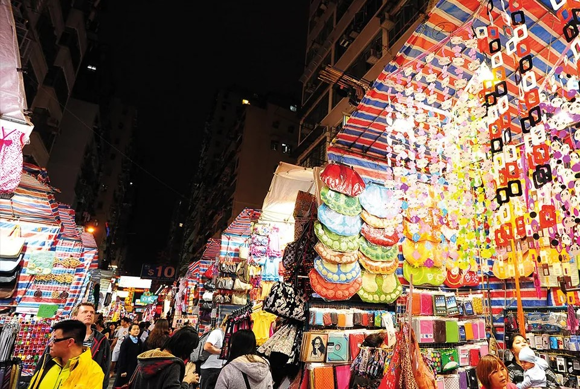
MTRで尖沙咀から旺角方面へ戻る途中、女人街（通菜街）に立ち寄る案もありです。
女人街（ノイヤンガイ）は、香港・旺角にある活気あふれるナイトマーケット。衣類やバッグ、雑貨、お土産などが所狭しと並び、値段交渉も楽しみの一つです。屋台グルメや地元の人々の熱気に包まれながら歩けば、香港ならではの庶民的な雰囲気を満喫できます。夕方から夜にかけて訪れ、掘り出し物探しや食べ歩きを楽しみましょう。
でも疲れていたら無理せずホテルへ。
ホテルへは徒歩で戻る予定。夜道は明るい道を選び、3人で一緒に行動しましょう。
11月10日（火）マカオでホテルステイ
今日は一日、ホテルを満喫！
午前｜チェックアウト・移動
- ホテルで朝食（朝食予約なし。各自で手配）。
- キー グリーンホテル モンコックをチェックアウト。
- マカオで使わない荷物は香港のホテルに預ける予定。
パスポートを忘れずに！ - マカオのザ・ヴェネツィアン・マカオへ移動。
マカオにはターボジェット（船）で行きますよ。
まずはMTRで上環へ、上環駅から直結ビルの3階へ上がり、エスカレーターで左手にある赤いターボジェットの入口から入場します。
乗船時間は１時間くらいです。
マカオ港からは、ゴージャスなヴェネツィアン専用バスに乗ります。
昼ごろ〜夜｜ホテルの中でゆったり
着きました！ 豪華さと大きさと人の多さにびっくり
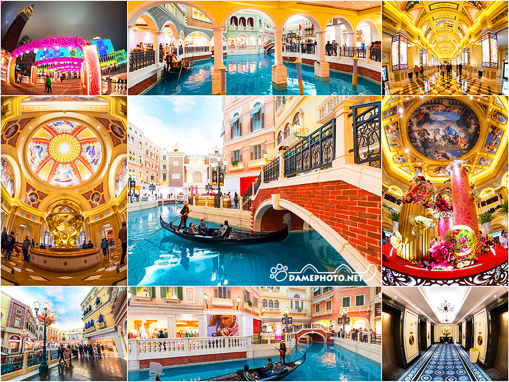
ショッピング、館内散策、写真撮影、カフェや食事など、ホテル内で過ごす時間を主役に。疲れたらお部屋で休憩しましょう。
- 館内の運河・ゴンドラエリアを散策
- ショップをのぞきながらお買い物
- カフェでお茶とスイーツ
- 夕食は気分と予算に合わせて選ぶ
- 翌日の観光に備えて早めに休む
11月11日（水）マカオ観光
ダニーさんと街歩き
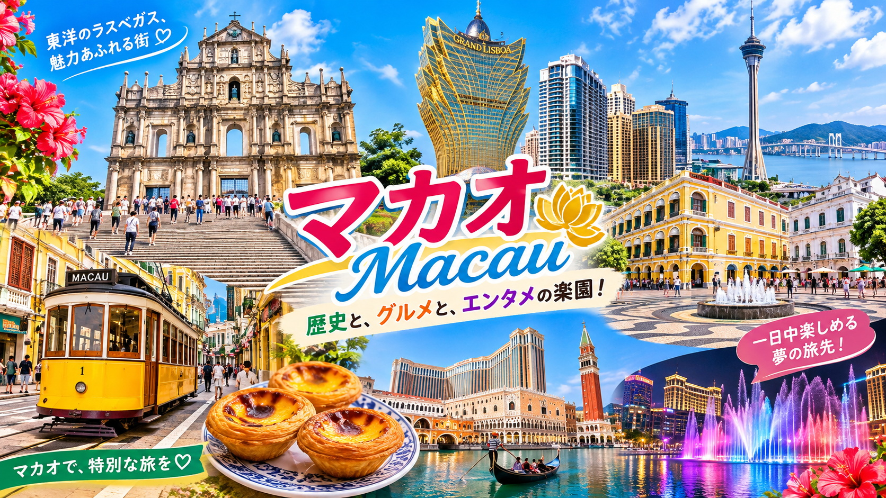
朝食後｜ガイドのダニーさんと合流
友人のガイド、ダニーさんとマカオ観光へ。
８時にホテルを出発します。以下のスポットを時間内で行ける範囲でめぐります。
-
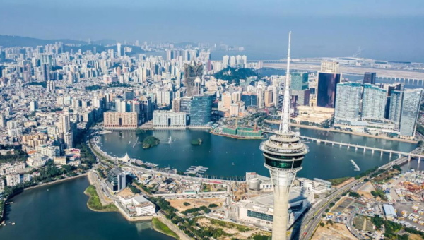
マカオタワー 高さ338メートルを誇るマカオのランドマーク。展望台からはマカオの街並みや珠江デルタの景色を一望できます。床がガラス張りの展望エリアもあり、スリル満点。バンジージャンプなどのアクティビティでも有名です。
今日は車窓からのみ。次回バンジーしましょう。 -
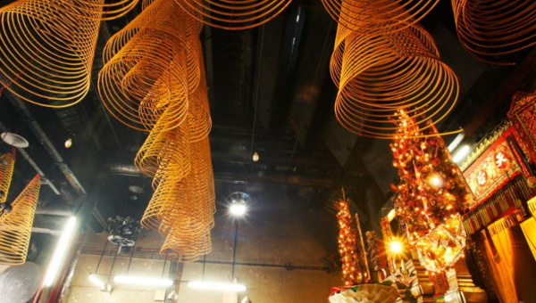
マーコミュウ 488年に創建されたと伝えられる、マカオを代表する中国寺院。海の女神「媽祖（マーゾ）」を祀り、航海の安全や家内安全を願う人々が訪れます。渦巻き状の大きな線香や伝統的な建築が印象的で、マカオの中国文化に触れられる場所です。 -
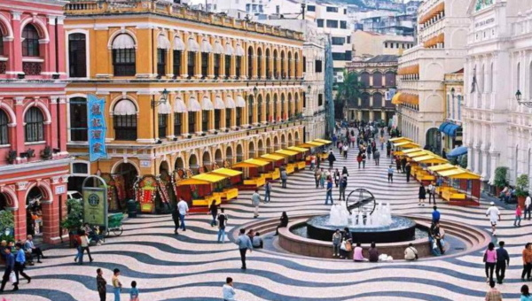
セナド広場 ポルトガル統治時代の面影が残る、マカオ歴史地区の中心的な広場。波模様の石畳とパステルカラーの建物が美しく、ヨーロッパの街角のような雰囲気を楽しめます。周辺にはカフェやショップも多く、散策や写真撮影にぴったりです。 -
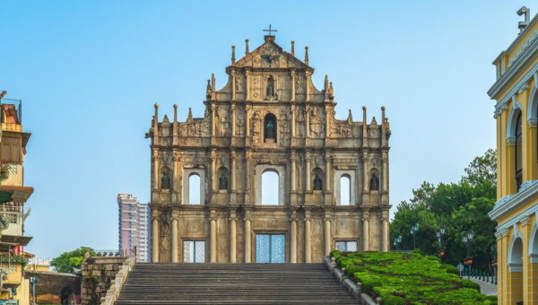
聖ポール天主堂跡 マカオを代表する世界遺産で、17世紀に建てられた教会の正面壁が残っています。1835年の火災で大部分が焼失しましたが、精巧な石彫刻が施されたファサードは圧巻。階段の下から眺める姿は記念撮影の定番で、マカオの歴史を感じられます。 -
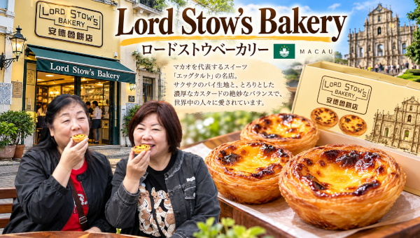
ロードストウズベーカリー マカオ名物のエッグタルトで世界的に知られるベーカリー。サクサクのパイ生地に、卵の風味豊かなカスタードと香ばしい焼き色が特徴です。コロアン島で生まれた人気店で、焼きたてを味わうのがおすすめ。観光の合間のおやつや、お土産にもぴったりです。
ポルトガル料理のランチして１４時前にはフェリー乗り場に移動しておきます。
- キー グリーンホテル モンコックで預けた荷物を受け取る。
- シティービューホテル（城景国際酒店）へ移動。
香港九龍油麻地窩打老道23号 - 最終日まで同じホテルに滞在。荷物を整えてひと安心。
香港に戻ってきました。
★夜にやっておくこと
明日は買い物三昧：
・買い忘れがないように、おみやげ・自分用・頼まれものを確認しておこう。
・荷物を仮パッキングして、トランクの重さとスペースの空きを計算しておき、賢く買い物しよう
11月12日（木）香港島観光とお買い物
景色もショッピングも楽しむ日
午前｜レパルスベイ(浅水湾)とスタンレーマーケット（赤柱市場）
朝食後、香港島サイドを中心に観光。
レパルスベイ
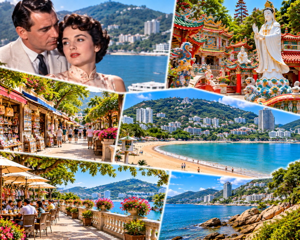
香港島南部にある香港で最も有名かつ美しい三日月型のビーチリゾートです。背後に山を背負い、目の前に穏やかな海が広がる「龍脈」の通り道であり、香港屈指の強力な風水パワースポットとしても知られています。そして何といっても名作映画「慕情」で主人公の女医ハン・スーイン（ジェニファー・ジョーンズ）とアメリカ人新聞記者のマーク・エリオット（ウィリアム・ホールデン）が2本の煙草に同時に火をつける、非常にロマンチックなラブシーンがあったのもここです。
事前に映画鑑賞して予習しておきましょう。
スタンレーマーケット
• 迷路のような路地にお宝がぎっしり
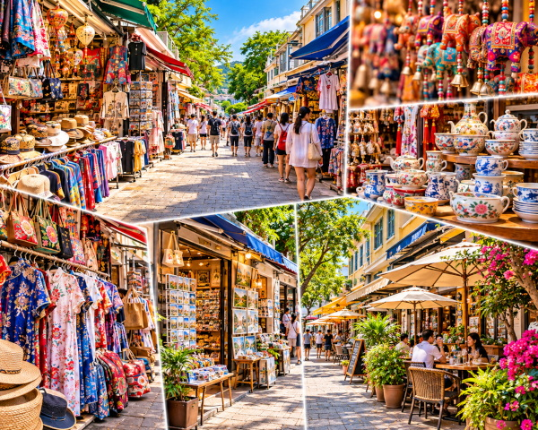
狭い路地が入り組んだ中に、数多くの小さな露天やショップがひしめき合っています。屋根付きのアーケードのようになっている場所も多く、天候を気にせず散策できます。• バラエティ豊かな品揃え
チャイナドレスや伝統工芸品、刺繍入りのリネン、お土産に人気の「花文字」のアート、アクセサリー、格安の衣料品や子供服などが所狭しと並んでいます。
• 観光客に優しい買い物環境
香港中心街の市場に比べて客引きが強引ではなく、店員さんも英語が堪能な人が多いため、海外旅行に慣れていない方でも比較的落ち着いて買い物を楽しめます。
ライチッコク（荔枝角）でお買い物
何百もの店舗がひしめき合う、衣料品やファッション雑貨の巨大な卸売・輸出街です。最新トレンドの服が格安で手に入るため、プロのバイヤーだけでなく一般の買い物客（特に週末）にも人気があります。
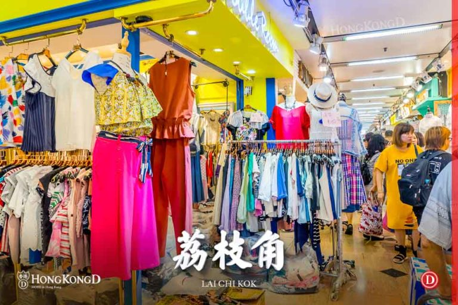
11月13日（金）帰国日
もっといたかったなぁ。また来ましょう！
朝食後｜空港へ移動
- 9:00頃 ホテルを出発する予定。
- 空港で軽食を取る。
- 香港エクスプレス UO638便
添付資料記載：香港発12:55 →福岡着17:00（日本時間）
香港・マカオ ガイド
旅先ですぐ見られるミニ情報
地名の読み方
香港の地名は漢字の読み方が日本語と異なります。タクシーや地図で見せられるよう、漢字も一緒に覚えておくと便利です。
- 旺角：モンコック（Mong Kok）
- 尖沙咀：チムサーチョイ（Tsim Sha Tsui）
- 油麻地：ヤウマテイ（Yau Ma Tei）
- 九龍：カオルーン（Kowloon）
- 中環：セントラル（Central）
お金・通貨
香港では香港ドル（HKD）、マカオではマカオ・パタカ（MOP）が使われます。中国元（CNY/RMB）は中国本土の通貨です。
為替レートは日々変わるため、出発前や現地で最新レートを確認しましょう。マカオでは香港ドルが受け入れられる場所もありますが、おつりの通貨などは店ごとに確認すると安心です。
かんたん広東語
カタカナは日本語話者向けの目安です。広東語には声調があり、カタカナだけでは正確な発音を表せません。笑顔と一緒に使ってみましょう。
旅先で困ったとき
- ホテル名・住所をスマホに保存し、画面を見せられるようにする。
- 3人で別行動する場合は、集合場所と時間を先に決める。
- パスポートや現金は一か所にまとめず、分散して保管する。
- フェリー・交通機関・入国条件などは、出発前に公式情報を確認する。
出発前チェックリスト
忘れ物ゼロで、いってらっしゃい！
- パスポート（有効期限・破損の有無を確認）
- 航空券・オンラインチェックイン・搭乗情報
- ホテル予約確認書（カズミが持っています）・住所・連絡先
- 海外旅行保険の情報・緊急連絡先
- クレジットカード・現金
- スマートフォン・充電器・モバイルバッテリー
- Wi-Fiルーター引き換え証
- 常備薬・眼鏡など個人の必需品
- 機内持ち込み手荷物のサイズ・重量を確認
- マカオに持っていくカバン
- 帰国便の到着空港・到着時刻を予約確認書で再確認
チェック項目はこの画面を開いている間の確認用です。ページを閉じるとチェック状態が保存されない場合があります。